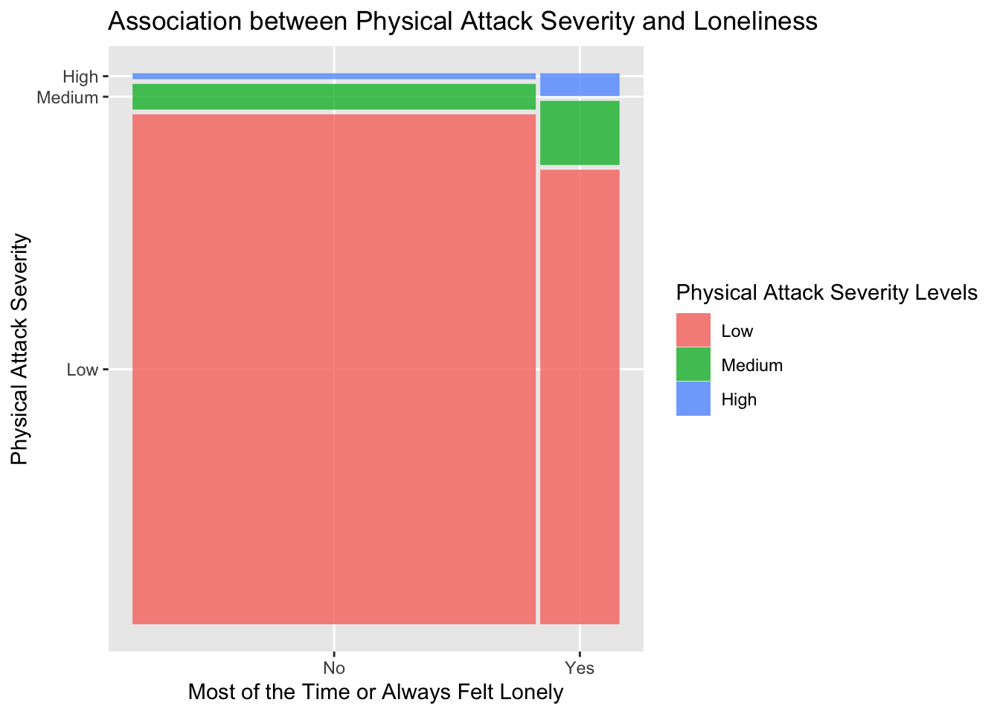

# read in data with here package
data <- read.delim(here::here("data", "Bullying_2018.csv"),
na.strings=c("", "NA"), sep = ";") %>%
clean_names()EPI 590 Final Project Code
Introduction to Data
The Global School-Based Student Health Survey (GSHS) (https://www.kaggle.com/datasets/leomartinelli/ bullying-in-schools) is a dataset containing school-based survey data. The survey was conducted in Ar- gentina in 2018 with 56,981 student participants, using a self-administered questionnaire to obtain data on adolescent’s demographics, family, and social factors related to bullying. Some example variables are the severity of physical attacks in bullying, sex, whether one has low or high amounts of close friends, whether parents understand problems, obesity status, and whether one feels lonely.
In this Quarto report, the objective of the analysis is to conduct exploratory data analysis on the variable relating to the severity of experiencing physical attacks in bullying and factors related to social relationships with peers, friends, and family. The results will be displayed in a descriptive statistics table. Secondly, a logistic regression model will be fit to estimate the association between demographic and social-related factors and loneliness. Thirdly, in order to visually represent the association between physical attack severity and loneliness, a mosaic plot will be created. Lastly, a function was created to convert categorical variables with two levels in the dataset into binary variables with values of 0 or 1.
# remove missing values
completedata <- replace(data, data == ' ', NA)
completedata <- na.omit(completedata)
# recode variables
physical_attack_data <- completedata %>%
# select variables of interest
dplyr::select(physically_attacked, parents_understand_problems, close_friends,
were_obese, most_of_the_time_or_always_felt_lonely, sex,
other_students_kind_and_helpful) %>%
#recode physical attack severity var
mutate(physical_attack_severity = case_when(
grepl("0 times", physically_attacked) ~ "Low",
grepl("1 time", physically_attacked) ~ "Low",
grepl("2 or 3 times", physically_attacked) ~ "Medium",
grepl("4 or 5 times", physically_attacked) ~ "Medium",
grepl("6 or 7 times", physically_attacked) ~ "Medium",
grepl("8 or 9 times", physically_attacked) ~ "High",
grepl("10 or 11 times", physically_attacked) ~ "High",
grepl("12 or more times", physically_attacked) ~ "High"),
#recode parents understand problems var
parents_understand_problems = case_when(
grepl("Always", parents_understand_problems) ~ "Yes",
grepl("Most of the time", parents_understand_problems) ~ "Yes",
grepl("Sometimes", parents_understand_problems) ~ "No",
grepl("Rarely", parents_understand_problems) ~ "No",
grepl("Never", parents_understand_problems) ~ "No"),
# recode other students kind and helpful var
other_students_kind_and_helpful = case_when(
grepl("Always", other_students_kind_and_helpful) ~ "Yes",
grepl("Most of the time", other_students_kind_and_helpful) ~ "Yes",
grepl("Sometimes", other_students_kind_and_helpful) ~ "No",
grepl("Rarely", other_students_kind_and_helpful) ~ "No",
grepl("Never", other_students_kind_and_helpful) ~ "No"),
# recode close friends var
close_friends = case_when(grepl("0", close_friends) ~ "Low",
grepl("1", close_friends) ~ "Low",
grepl("2", close_friends) ~ "Low",
grepl("3 or more", close_friends) ~ "High"),
# turn variables into factors
physical_attack_severity = factor(physical_attack_severity,
levels = c("Low", "Medium", "High")),
parents_understand_problems = as.factor(parents_understand_problems),
close_friends = as.factor(close_friends),
were_obese = as.factor(were_obese),
most_of_the_time_or_always_felt_lonely =
as.factor(most_of_the_time_or_always_felt_lonely),
sex = as.factor(sex),
other_students_kind_and_helpful =
as.factor(other_students_kind_and_helpful)) %>%
# remove physically attacked variable
select(-physically_attacked)Tables, Figures, and Functions
Below, Table 1 contains descriptive statistics separated by the subgroups of the bullying physical attack severity variable. Table 2 contains results for a logistic regression model with loneliness as the dependent variable and sex, peer kindness, and parents being able to understand problems as independent variables. Figure 1 contains a mosaic plot to show the association between the number of physical attacks in bullying and loneliness.
Descriptive Table
# rename column variables for table
table_data <- physical_attack_data
names(table_data)[names(table_data)=="parents_understand_problems"] <-
"Parents Understand Problems"
names(table_data)[names(table_data)=="close_friends"] <- "Close Friends"
names(table_data)[names(table_data)=="were_obese"] <- "Were Obese"
names(table_data)[names(table_data)=="most_of_the_time_or_always_felt_lonely"] <-
"Most of the Time or Always Felt Lonely"
names(table_data)[names(table_data)=="sex"] <- "Sex"
names(table_data)[names(table_data)=="other_students_kind_and_helpful"] <-
"Other Students Kind and Helpful"
# create summary table
table1 <- tbl_summary(table_data, by = "physical_attack_severity",
type = all_dichotomous() ~ "categorical") %>%
add_overall() %>%
modify_caption("**Distribution of Variables Across
Physical Attack Severity Levels**")
table1| Characteristic | Overall N = 32,9381 |
Low N = 30,5211 |
Medium N = 1,9191 |
High N = 4981 |
|---|---|---|---|---|
| Parents Understand Problems | ||||
| No | 18,879 (57%) | 17,145 (56%) | 1,366 (71%) | 368 (74%) |
| Yes | 14,059 (43%) | 13,376 (44%) | 553 (29%) | 130 (26%) |
| Close Friends | ||||
| High | 22,938 (70%) | 21,424 (70%) | 1,204 (63%) | 310 (62%) |
| Low | 10,000 (30%) | 9,097 (30%) | 715 (37%) | 188 (38%) |
| Were Obese | ||||
| No | 30,552 (93%) | 28,348 (93%) | 1,767 (92%) | 437 (88%) |
| Yes | 2,386 (7.2%) | 2,173 (7.1%) | 152 (7.9%) | 61 (12%) |
| Most of the Time or Always Felt Lonely | ||||
| No | 27,548 (84%) | 25,989 (85%) | 1,284 (67%) | 275 (55%) |
| Yes | 5,390 (16%) | 4,532 (15%) | 635 (33%) | 223 (45%) |
| Sex | ||||
| Female | 17,679 (54%) | 16,539 (54%) | 911 (47%) | 229 (46%) |
| Male | 15,259 (46%) | 13,982 (46%) | 1,008 (53%) | 269 (54%) |
| Other Students Kind and Helpful | ||||
| No | 16,951 (51%) | 15,440 (51%) | 1,188 (62%) | 323 (65%) |
| Yes | 15,987 (49%) | 15,081 (49%) | 731 (38%) | 175 (35%) |
| 1 n (%) | ||||
The number of participants in the overall sample size is 32938.
From the table, the count and percent for female students in the subset of the sample that experienced low severity of physical attacks in bullying is 16,539 (54%).
Regression Table
# recode variable
regression_data <- physical_attack_data %>%
mutate(most_of_the_time_or_always_felt_lonely =
ifelse(most_of_the_time_or_always_felt_lonely == "No", 0, 1))
# fit logistic model
logistic_model <- glm(most_of_the_time_or_always_felt_lonely ~ sex
+ other_students_kind_and_helpful +
parents_understand_problems,
data = regression_data, family = binomial())
# create regression table
tbl_regression(
logistic_model,
exponentiate = TRUE,
label = list(
sex ~ "Sex",
other_students_kind_and_helpful ~ "Other Students Kind and Helpful",
parents_understand_problems ~ "Parents Understand Problems"
))| Characteristic | OR1 | 95% CI1 | p-value |
|---|---|---|---|
| Sex | |||
| Female | — | — | |
| Male | 0.36 | 0.34, 0.39 | <0.001 |
| Other Students Kind and Helpful | |||
| No | — | — | |
| Yes | 0.51 | 0.48, 0.54 | <0.001 |
| Parents Understand Problems | |||
| No | — | — | |
| Yes | 0.32 | 0.30, 0.34 | <0.001 |
| 1 OR = Odds Ratio, CI = Confidence Interval | |||
Figure
# create mosaic plot
mosaic_plot <- ggplot(data = physical_attack_data) +
geom_mosaic(aes(x = product(physical_attack_severity,
most_of_the_time_or_always_felt_lonely),
fill=physical_attack_severity)) +
scale_fill_discrete(name = "Physical Attack Severity Levels") +
labs(x = "Most of the Time or Always Felt Lonely",
y = "Physical Attack Severity",
title = "Association between Physical Attack Severity and Loneliness")
mosaic_plot
# save figure with here package
ggsave("mosaicplot.png", mosaic_plot, path = here::here())
Write and Use a Function
# function to turn categorical variables with two levels into binary variable
cat_to_bin <- function (variable) {
newvar <- ifelse(variable == "No", 0, 1)
return (newvar)
}# first 10 observations of original variable
head(physical_attack_data$were_obese, 10) [1] No No No No Yes No No No No No
Levels: No Yes# first 10 observations of new variable
head(cat_to_bin(physical_attack_data$were_obese), 10) [1] 0 0 0 0 1 0 0 0 0 0